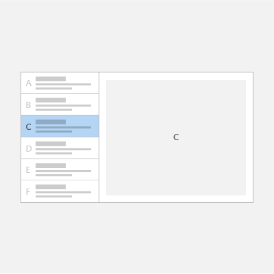
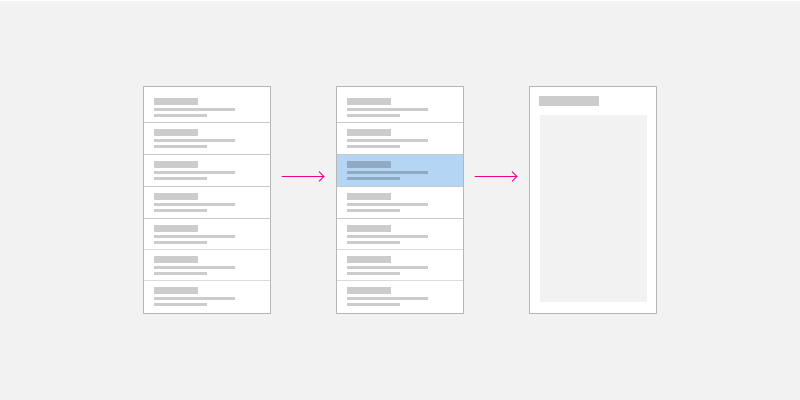
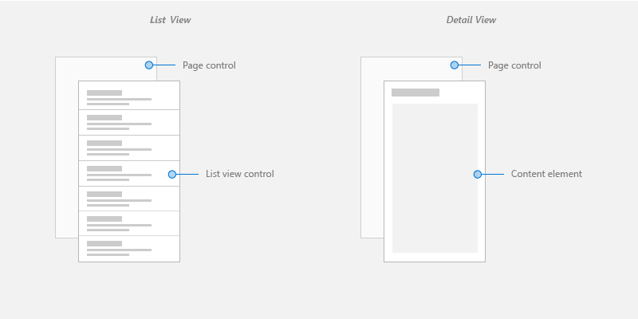
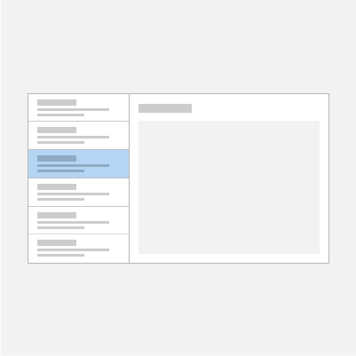
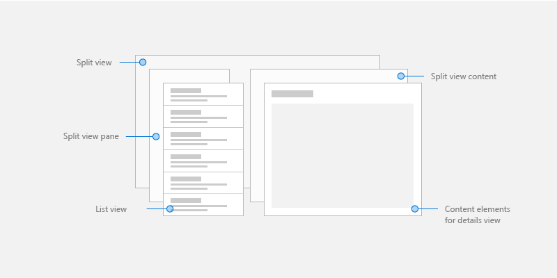
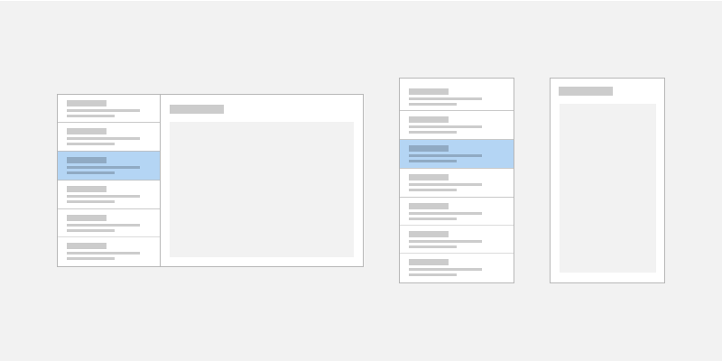

List/details pattern
The list/details pattern has a list pane (usually with a list view) and a details pane for content. When an item in the list is selected, the details pane is updated. This pattern is frequently used for email and address books.
Important APIs: ListView class, SplitView class

Tip
If you'd like to use a XAML control that implements this pattern for you, we recommend the ListDetailsView XAML Control from the Windows Community Toolkit.
Is this the right pattern?
The list/details pattern works well if you want to:
- Build an email app, address book, or any app that is based on a list-details layout.
- Locate and prioritize a large collection of content.
- Allow the quick addition and removal of items from a list while working back-and-forth between contexts.
Choose the right style
When implementing the list/details pattern, we recommend that you use either the stacked style or the side-by-side style, based on the amount of available screen space.
| Available window width | Recommended style |
|---|---|
| 320 epx-640 epx | Stacked |
| 641 epx or wider | Side-by-side |
Stacked style
In the stacked style, only one pane is visible at a time: the list or the details.

The user starts at the list pane and "drills down" to the details pane by selecting an item in the list. To the user, it appears as though the list and details views exist on two separate pages.
Create a stacked list/details pattern
One way to create the stacked list/details pattern is to use separate pages for the list pane and the details pane. Place the list view on one page, and the details pane on a separate page.

For the list view page, a list view control works well for presenting lists that can contain images and text.
For the details view page, use the content element that makes the most sense. If you have a lot of separate fields, consider using a Grid layout to arrange elements into a form.
For navigation between pages, see navigation history and backwards navigation for Windows apps.
Side-by-side style
In the side-by-side style, the list pane and details pane are visible at the same time.

The list in the list pane has a selection visual to indicate the currently selected item. Selecting a new item in the list updates the details pane.
Create a side-by-side list/details pattern
One way to create a side-by-side list/details pattern is to use the split view control. Place the list view in the split view pane, and the details view in the split view content.

For the list pane, a list view control works well for presenting lists that can contain images and text.
For the details content, use the content element that makes the most sense. If you have a lot of separate fields, consider using a Grid layout to arrange elements into a form.
Adaptive layout
To implement a list/details pattern for any screen size, create a responsive UI with an adaptive layout.

Create an adaptive list/details pattern
To create an adaptive layout, define different VisualStates for your UI, and declare breakpoints for the different states with AdaptiveTriggers.
Get the sample code
The following samples implement the list/details pattern with adaptive layouts and demonstrate data binding to static, database, and online resources:
Tip
If you'd like to use a XAML control that implements this pattern for you, we recommend the ListDetailsView XAML Control from the Windows Community Toolkit.